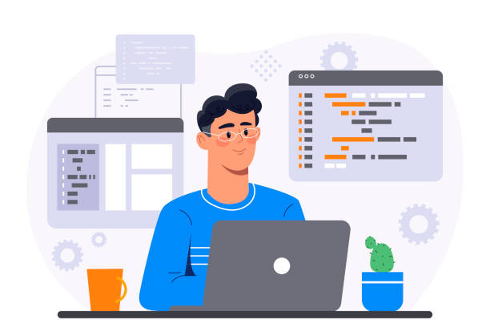
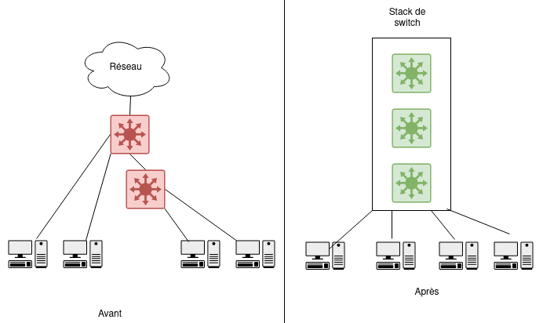

Professional Projects
Completed during my apprenticeship at Orange Business as a Client Solutions Engineer in Network, Cloud, and Security (presented using the PORTE methodology).
Completed during my apprenticeship at Orange Business as a Client Solutions Engineer in Network, Cloud, and Security (presented using the PORTE methodology).
Problem / Objectives: Design, adapt, or upgrade client site network architectures (multi-site interconnection, WAN/SD-WAN link optimization, and improvement of traffic resilience and security).
Role: Analysis of client functional and technical requirements, audit of existing configurations, target architecture design, and preparation of technical deliverables.
Technical Implementation: Creation of architecture diagrams (HLD/LLD), IP addressing plans, VLAN segmentation, selection of routing protocols (BGP, OSPF), SD-WAN/VPN integration, and drafting of configuration files prior to deployment.
Results / KPIs: Validated network solutions ready for production deployment, ensuring high availability, security compliance, and service continuity across client sites.

Problem / Objectives: An internal testing platform (lab) suffered from obsolete hardware, outdated software versions, and insufficient security levels to reliably prototype client architectures.
Role: End-to-end management of operational restoration, version upgrades, and security hardening of the environment.
Technical Implementation: Inventory and overhaul of cabling and network topology, firmware and OS upgrades (routers, switches, firewalls, servers), disabling of insecure protocols and services, segmentation of management VLANs, and reinforcement of access controls (SSH, ACLs, account management).
Results / KPIs: 100% operational internal lab, fully updated and compliant with cybersecurity best practices, enabling validation of POCs and complex configurations under real-world conditions.
